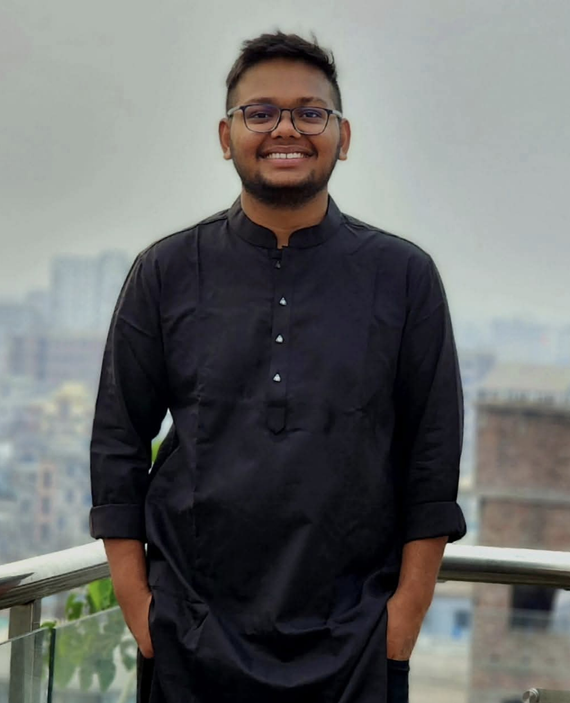
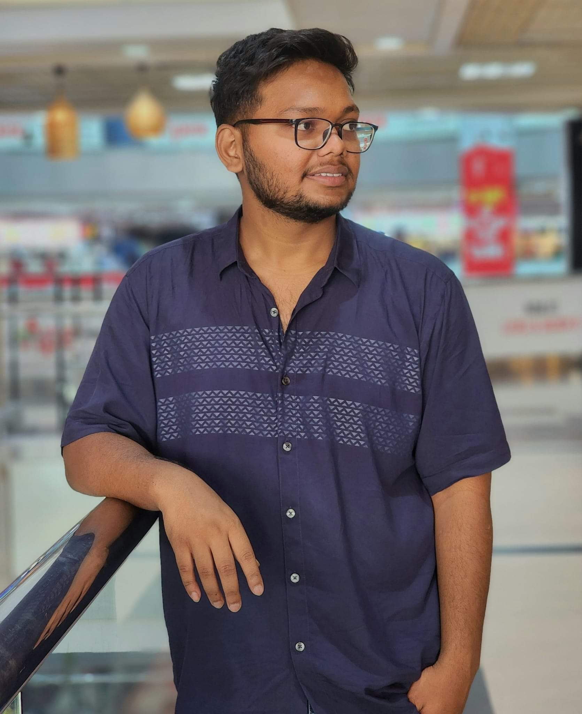
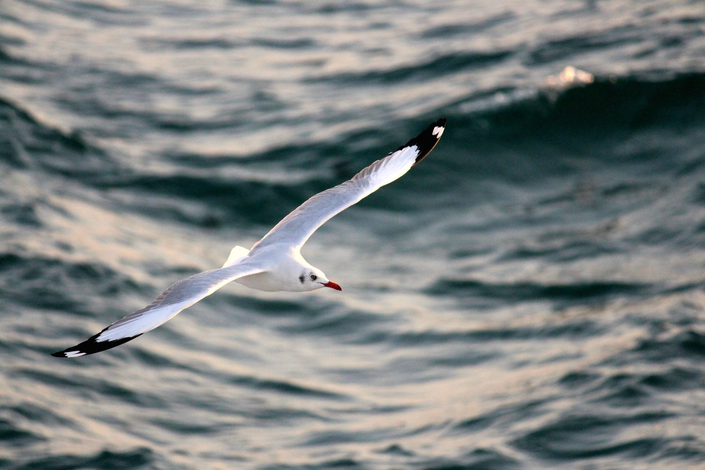
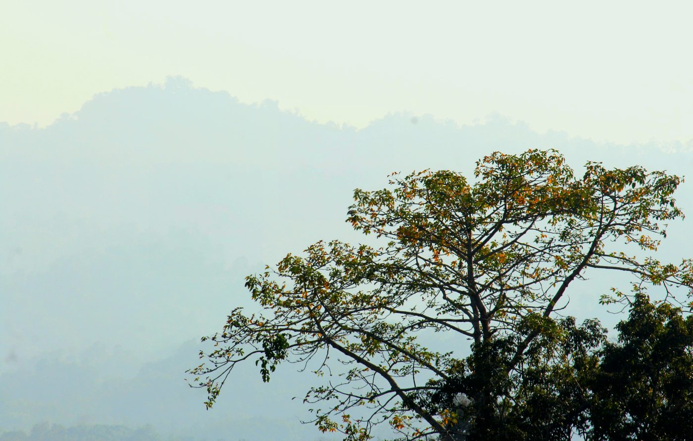
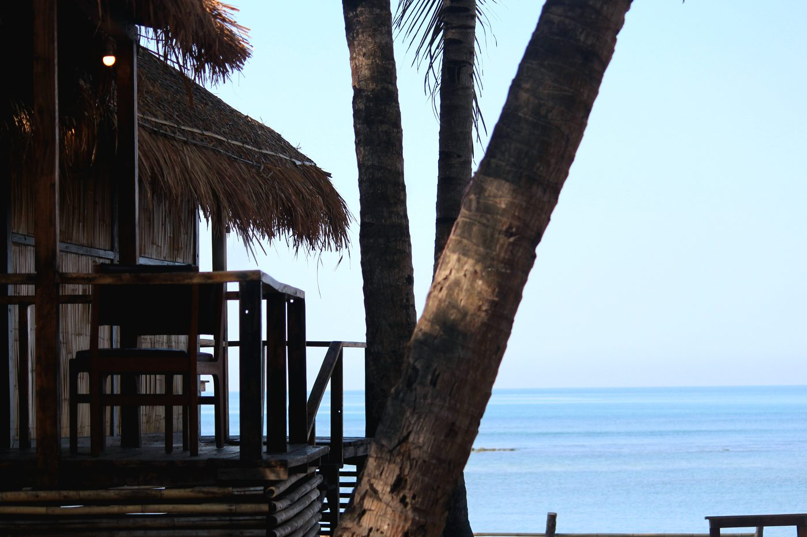
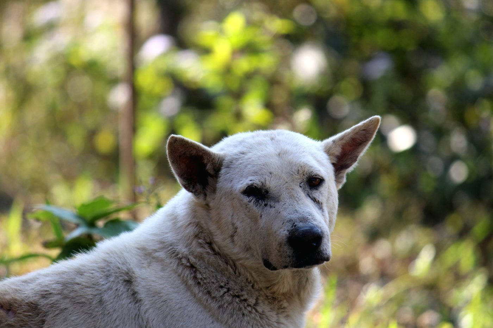
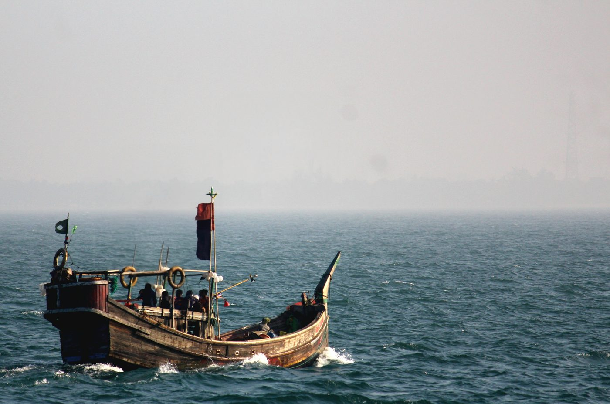

Portable Network-Connected Monitoring Device for EV Induction Motors Using ESP32 and Raspberry Pi with Multi-Sensor Data
IEEE EICT 2025
View on IEEE Xplore →
Mechatronics engineer working at the intersection of machine learning, industrial IoT, and operations research. Interested in fault-tolerant systems for smart manufacturing — machines that know when they are failing, and recover gracefully.


I recently completed my B.Sc. in Mechatronics and Industrial Engineering at Chittagong University of Engineering & Technology (CUET), where my thesis applied Fuzzy AHP and BWM to facility-location problems for mobile manufacturing in Bangladesh.
My research now focuses on combining deep learning with classical industrial engineering — building systems that detect bearing faults across noisy operating conditions, schedule production under partial observability, and remain robust when the world stops behaving like the training set.
I am applying to PhD and Masters-by-Research programs to continue this work in a research-lab environment.
Automated pick-and-sort robotic system on Raspberry Pi with OpenCV for real-time shape detection. Integrates camera-based recognition, servo gripping, and DC-motor turning to sort objects by their geometric features.
End-to-end inventory analytics pipeline for demand forecasting and stockout-risk prediction, paired with EOQ/ROP-based replenishment recommendations. Includes a dashboard for monitoring inventory status.
CNN-based skin-lesion classifier trained on the HAM10000 dataset, deployed with a Flask API and React frontend for real-time prediction through an interactive diagnostic interface.
When I am not buried in models or papers, I am usually somewhere with a camera. The coast, the hills, an unfamiliar village — anywhere the light is doing something interesting. Photography is how I rest, and how I pay attention to the world without trying to optimize it.




